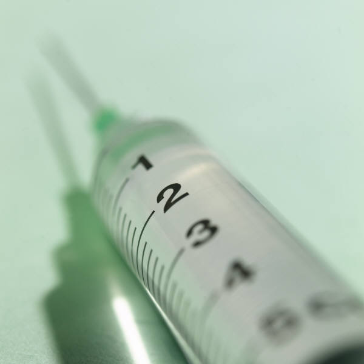

Truvada: The New "It" Drug
Sarah Ng
Fall 2012

Pharmaceutical companies spend billions of dollars per year to develop
new, ground-breaking drugs. Only two out of ten drugs ever make it past
development and the FDA, and often times, these drugs take years upon
years to develop and test. One of the deadliest diseases is HIV/AIDS.
Increasing knowledge and awareness surrounding the spread of HIV/AIDS
in the United States has caused the rates of the disease to slowly
decline. However, the rates of HIV/AIDS in developing countries remain
alarmingly high. This past summer, the FDA approved of a groundbreaking
drug, Truvada, produced by Bay Area biotechnology company, Gilead. In
the 30-year struggle battling this virus, Truvada is the first ever
approved HIV preventative drug.
Truvada is described as a drug that can be used as a
preventative measure for those who engage in risky sexual behavior,
particularly those who engage in unprotected sex, sex with multiple
partners, or sex with HIV-positive individuals. While the spread of HIV
has significantly declined in the United States, the rate has reduced
to about 50,000 new infections each year for the last 15 years. 1.2
million Americans are currently infected with HIV. HIV can progress to
AIDS, which is eventually fatal, if the individual is not treated with
antiviral drugs. An estimated 240,000 HIV carriers are unaware of their
own status and could unknowingly be spreading the virus to sexual
partners.
The chemical components in Truvada make it harder
for the HIV-1 virus to duplicate and continue the spread of disease.
The specific enzyme that is blocked is HIV-1 reverse transcriptase, the
enzyme in the body that aids the HIV-1 virus in replication. As a
result, Truvada will lower the viral load of HIV-1 in the body while
also increasing the number T cells or CD4 cells, immune system cells
that help fend off infection in the body.
Truvada has been marketed and prescribed since 2004,
and many studies and clinical trials were conducted over the eight-year
period leading up to its FDA approval this past summer. The FDA cites
two large, randomized, double-blind, placebo controlled studies among
people at high risk of being in contact with HIV/AIDS, including
inconsistent condom use, high number of sex partners, and exchange of
sex for commodities. The format of the study allowed researchers to
closely mimic an ideal situation in that neither researchers nor
patients knew if they were receiving Truvada or simply a placebo (pill
with no intended effect), and therefore would not be swayed to shift
their behavior and affect the results of the study. In 2010, a study
was released showing that the drug was effective if taken as a
precautionary preventative. A study conducted over three years among
healthy and uninfected gay and bisexual men found that taking a daily
dose of Truvada reduced the risk of infection by 42% when coupled with
other safe sex measures like condom use and counseling. A similar study
revealed that among heterosexual couples, Truvada use decreased
infection by 75%. However, one study among female sex workers showed
that those who took Truvada did not have increased protection against
HIV. Researchers hypothesize that either the women did not take the
drug in the correct doses, or the vaginal environment could be
dampening the effects of the drug. Regardless, the recent FDA approval
of Truvada will allow Gilead to formally market the drug for the use of
HIV prevention, which is likely to increase the rate at which doctors
prescribe the drug to patients.
While these statistics are compelling, many remain
skeptical about Truvada. Multiple stakeholders, including relevant
organizations, doctors, public health officials, and more are split on
the issue. Some doctors have made the argument that since Truvada must
be taken as a daily preventative, the HIV virus has the potential to
become resistant to medication. Inevitably, there has been moral
backlash from many members of the community who believe that a drug
like Truvada could increase the prevalence of risky sexual behaviors.
According to researchers, clinical trials have rebutted this claim.
Only time will tell how the conflict surrounding
Truvada will play out. One thing that is important to note is that
Truvada, by itself, cannot entirely protect one from HIV/AIDS. From a
public health perspective, it is increasingly important to stress the
idea that Truvada must be taken in the correct dosages and in
conjunction with safe sex practices, like regular testing, counseling
and support, and condom use. Unfortunately, Truvada costs a minimum of
$1,200 per month, not including treatment for other health problems
that may result from side effects of the drug. Unfortunately, given its
current high cost, Truvada may not be a reasonable option for at-risk
individuals and is certainly becoming out of reach as a solution to
treating HIV/AIDS in developing countries.
About the Author
Sarah Ng, class of 2013, Public Health and Integrative
Biology double major, pursuing a career in healthcare and/or health
policy.